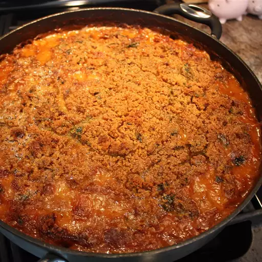

Chef John's Cassoulet
Description
Cassoulet is a rich, slow-cooked stew originating in southern France. The food writer Elizabeth David described it as "that sumptuous amalgamation of haricot beans, sausage, pork, mutton and preserved goose, aromatically spiced with garlic and herbs".
Ingredients
- 3 quarts seasoned chicken stock or both
- 4 ounces pancetta, cut into 1/4-inch dice
- 2 duck leg confit, bones, reserved, divided
- 1 pound Tarbias beans, or other white beans, soaked overnight, then rinsed and drained
- 2 bay leaves
- 1/2 cup diced carrot
- 1/2 cup diced celery
- 1/4 cup tomato paste
- 3/4 cup white wine
- 1 teaspoon salt
Steps
- Pour chicken stock into a large pot. Add pancetta, bones from duck confit, and drained beans. Tie bay leaves, peppercorns, thyme sprigs, and garlic cloves into a small square of cheesecloth to create a bouquet garni; add to the pot. Stir and bring to a simmer over high heat; skim off any foamy scum that forms if desired. Reduce the heat to low and simmer until beans are almost tender, 30 to 45 minutes.
- Sprinkle pork pieces with salt and pepper. Heat oil in a skillet over medium-high heat; add pork and brown for 3 to 5 minutes. Transfer to a bowl. Add sausage to the skillet and cook until nicely browned on all sides, turning occasionally, 3 to 4 minutes. Cut sausages in half and transfer to the bowl with pork pieces.
- Serve in large bowls with a spoonful or two of hot cooking liquid. Top with chopped fresh parsley.